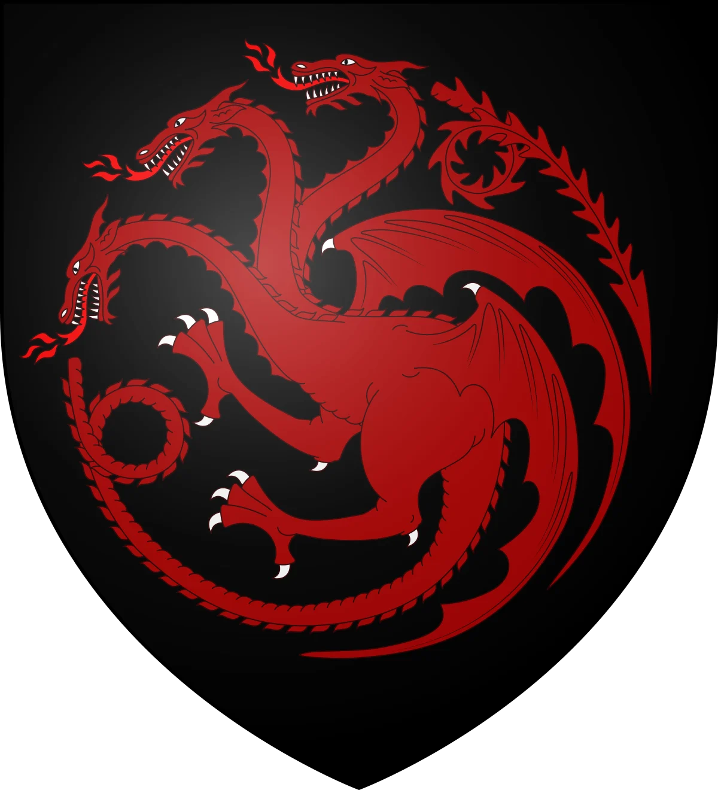
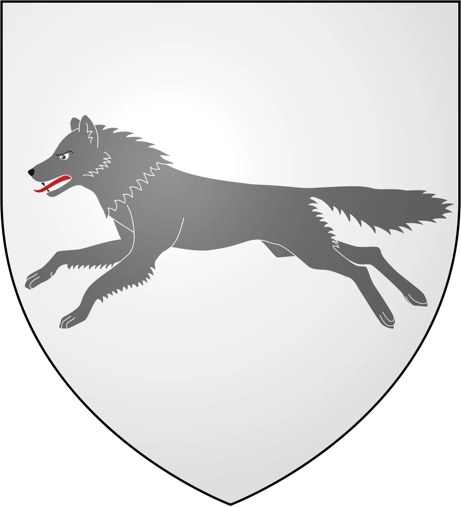
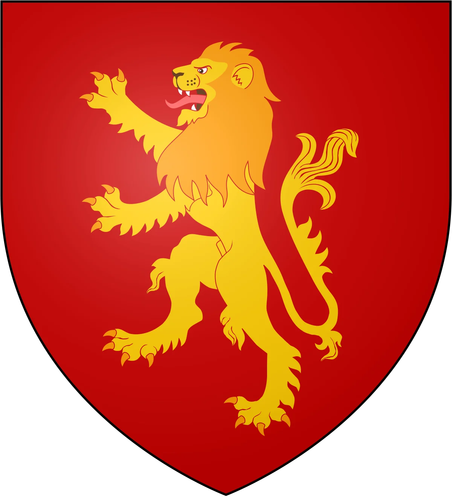
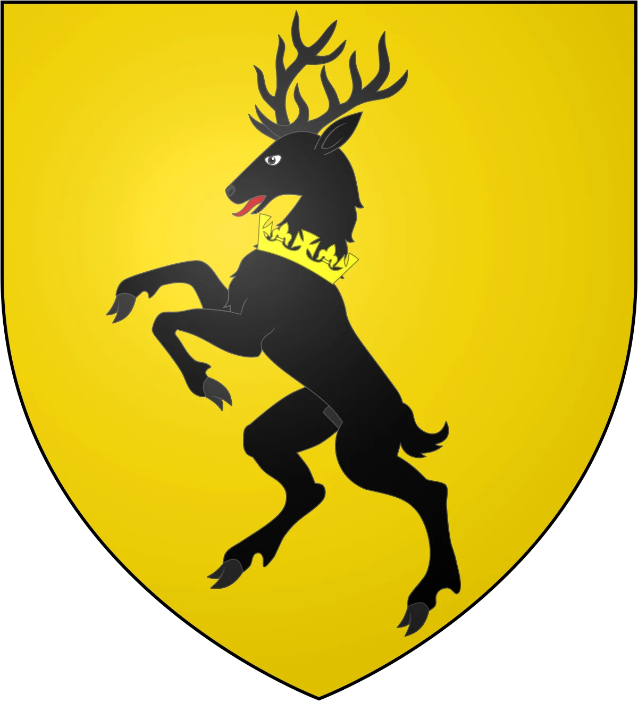
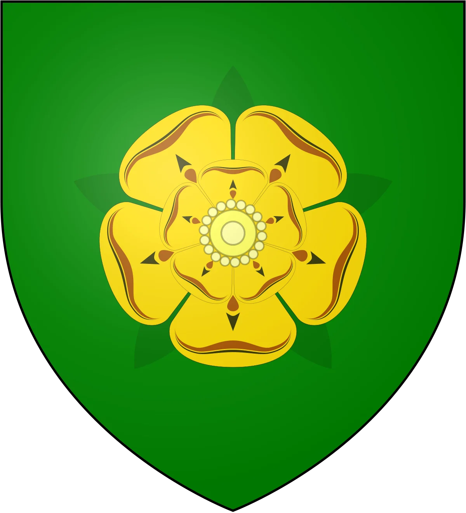
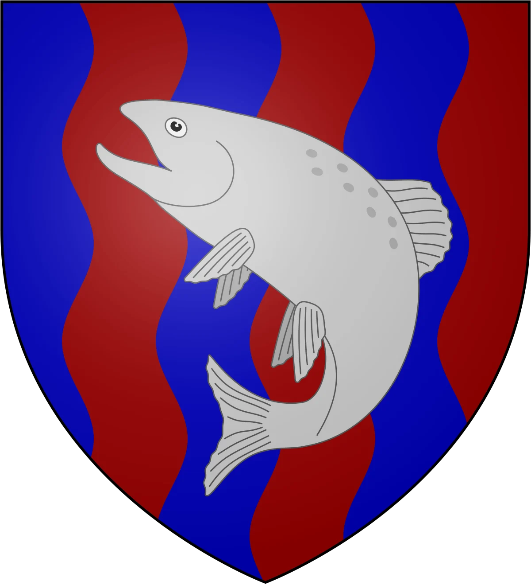
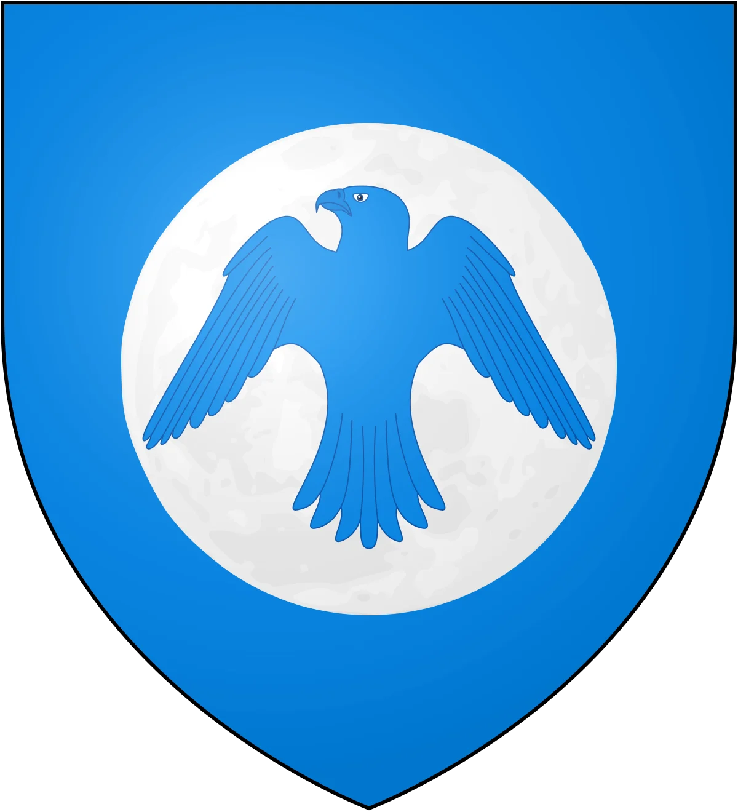
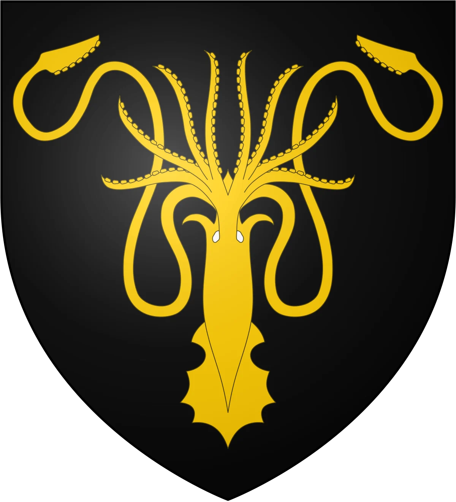
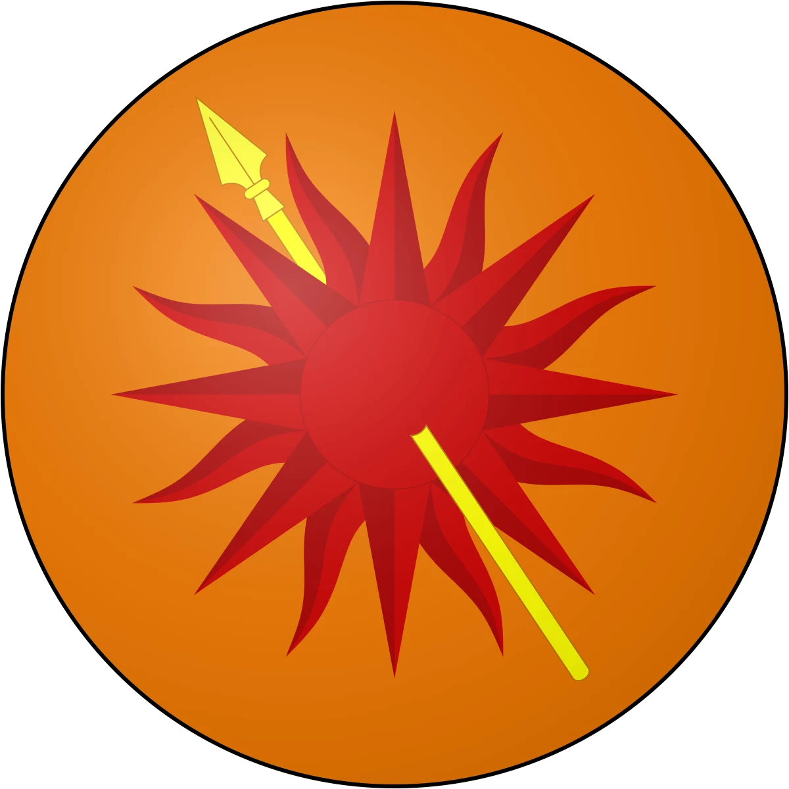

Casa Targaryen
Sede: Porto Real
Região: Terras da Coroa
Fundador: Aegon, o Conquistador
Religião: Fé dos Sete
Família:
- Aerys Targaryen
- Rhaella Targaryen
- Rhaegar Targaryen
- Viserys Targaryen
- Daenerys Targaryen

Fogo e sangue
Lema da Casa
Casa Stark
Sede: Winterfell
Região: O Norte
Fundador: Bran, o Construtor
Religião: Os Antigos Deuses
Família:
- Eddard Stark
- Catelyn Stark (Tully)
- Robb Stark
- Sansa Stark
- Arya Stark
- Brandon Stark
- Rickon Stark
- Jon Snow (filho bastardo)

O inverno está chegando
Lema da Casa
Casa Lannister
Sede: Rochedo Casterly
Região: Terras Ocidentais
Fundador: Lann, o Esperto
Religião: Fé dos Sete
Família:
- Tywin Lannister
- Joanna Lannister
- Cersei Lannister
- Jaime Lannister
- Tyrion Lannister

Ouça-me rugir
Lema da Casa
Casa Baratheon
Sede: Ponta Tempestade
Região: Terras da Tempestade
Fundador: Orys Baratheon
Religião: Fé dos Sete
Família:
- Robert Baratheon
- Stannis Baratheon
- Renly Baratheon

Nossa é a fúria
Lema da Casa
Casa Tyrell
Sede: Jardim de Cima
Região: Campina
Fundador: Alester Tyrell
Religião: Fé dos Sete
Família:
- Mace Tyrell
- Olenna Tyrell (Redwyne)
- Willas Tyrell
- Garlan Tyrell
- Loras Tyrell
- Margaery Tyrell

Crescendo fortes
Lema da Casa
Casa Tully
Sede: Correrrio
Região: Terras Fluviais
Fundador: Axel Tully
Religião: Fé dos Sete
Família:
- Hoster Tully
- Minisa Tully (Whent)
- Catelyn Tully
- Lysa Tully
- Edmure Tully

Família, dever, honra
Lema da Casa
Casa Arryn
Sede: Ninho da Águia
Região: O Vale de Arryn
Fundador: Artys, o Cavaleiro Falcão
Religião: Fé dos Sete
Família:
- Jon Arryn
- Lysa Arryn (Tully)
- Robert Arryn

Tão alto como a honra
Lema da Casa
Casa Greyjoy
Sede: Pyke
Região: Ilhas de Ferro
Fundador: Vickon Greyjoy
Religião: O Deus Afogado
Família:
- Balon Greyjoy
- Alannys Greyjoy (Harlaw)
- Rodrik Greyjoy
- Maron Greyjoy
- Asha Greyjoy
- Theon Greyjoy

Nós não semeamos
Lema da Casa
Casa Martell
Sede: Lançassolar
Região: Dorne
Fundador: Morgan Martell
Religião: Fé dos Sete
Família:
- Doran Martell
- Mellario de Norvos
- Arianne Martell
- Quentyn Martell
- Trystane Martell

Insubmissos, imbatíveis, inquebráveis
Lema da Casa